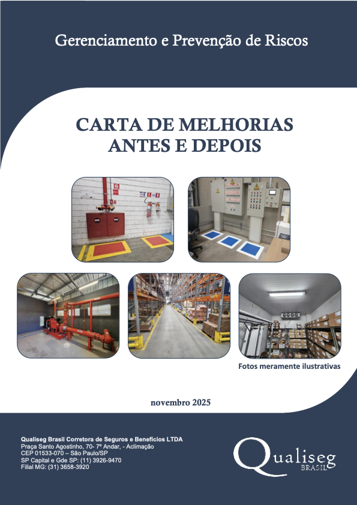

Carta de Melhorias Oficial (Antes e Depois)
Laudo pericial completo gerado no sistema com a classificação de risco por severidade, fotos de antes/depois com geolocalização e chancela técnica formal para entrega à seguradora.
Abrir Laudo Pericial Real em PDF (17 pág.) ↗